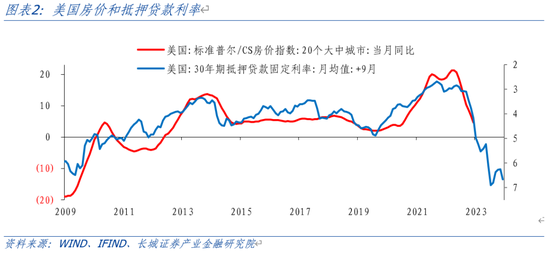
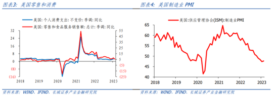
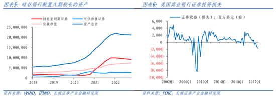
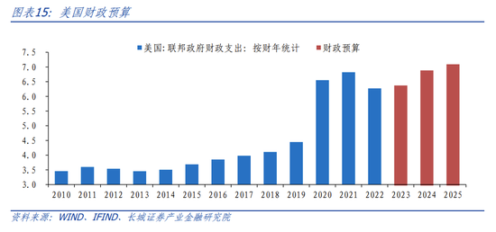

经历2022年以来持续加息的影响，美国部分经济指标回落速度正在加快。首先，M2同比增速已经降至1月的-1.73%，与去年同期的11.74%相比已经大幅收缩。同时CPI同比增速也从去年6月最高点的9.1%回落至2月份的6%。

其次，2022年12月，美国20大中城市房价环比-0.93%，同比回落至4.65%，较最高点21.29%大幅下降。目前美国房贷利率依然高达6.66%，根据房贷利率领先房价增速大约9个月的规律，美国房价还将继续下跌。

再者，美国零售和食品服务销售额同比增速已经下滑至2月的5.39%，处于2021年以来的最低增速；制造业PMI指数也已经连续两个月跌破48%，从2000年以来，美国制造业PMI有5次跌破并持续位于48%以下，均发生了经济衰退。

商业银行危机爆发，流动性继续紧张。随着加息效果的逐渐显现，部分银行出现了流动性问题。比如硅谷银行，其主要存款客户都是科技创业公司。在一级融资市场收紧的情况下，这些公司开始取出存在硅谷银行的存款，而这些存款被硅谷银行投资到持有到期的证券上。由于存款规模较大，证券账面处于亏损状态，造成恐慌和挤兑，进而演变成区域性银行危机。3月8日，美国加息货币友好银行Silvergate宣告停止运营，清算资产。3月10日，美国硅谷银行被联邦存款银行保险公司（FDIC）介入接管，中止运营。3月12日，Signature Bank被监管机构关闭。美联储加息以来，美国商业银行证券投资普遍亏损，目前危机还未结束。

3月9日，美国拜登政府公布了2024财年财政预算案，预计国会两党将展开激烈争辩。拜登政府对2024财年提出了6.88万亿美元的预算总额，较2023财年的6.37万亿增长了8%（5100亿美元）。2024财年预算收入5.04万亿美元，较2023年财年4.80万亿增加了5%（2400亿美元）。这意味着，美国仍有2700亿美元的预算赤字。
